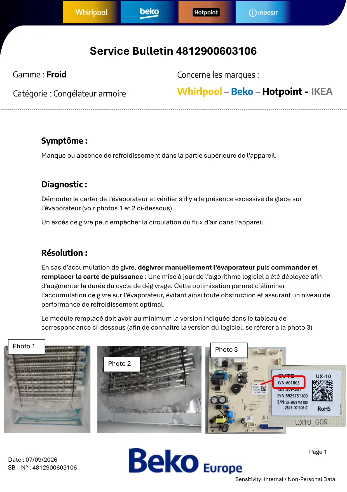
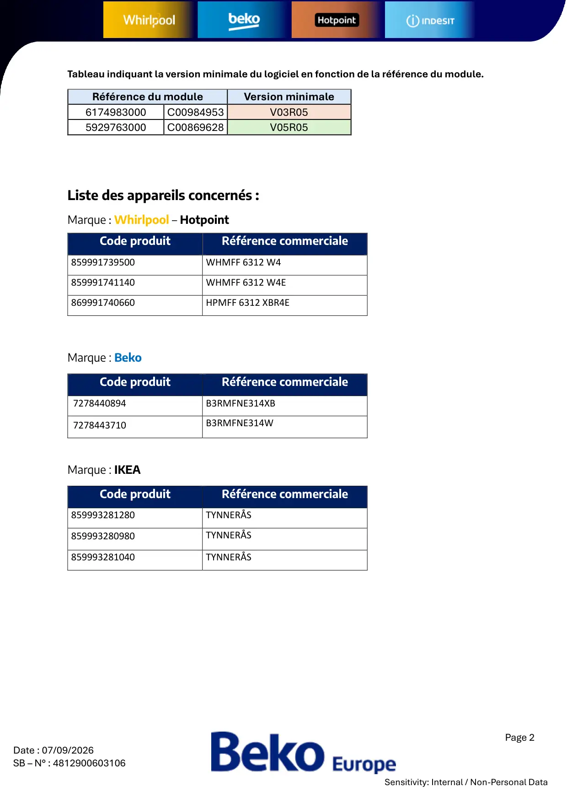
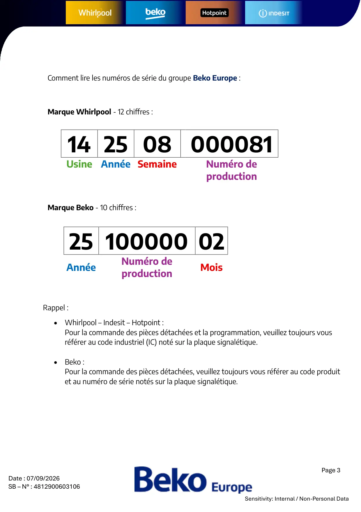

4812900603106 Excès de givre sur evaporateur Congelateur armoire

Page 1Date : 07/09/2026SB – N° : 4812900603106Sensitivity: Internal / Non-Personal DataSymptôme :Manque ou absence de refroidissement dans la partie supérieure de l’appareil.Diagnostic :Démonter le carter de l’évaporateur et vérifier s’il y a la présence excessive de glace surl’évaporateur (voir photos 1 et 2 ci-dessous).Un excès de givre peut empêcher la circulation du flux d’air dans l’appareil.Résolution :En cas d’accumulation de givre, dégivrer manuellement l’évaporateur puis commander etremplacer la carte de puissance : Une mise à jour de l’algorithme logiciel a été déployée afind’augmenter la durée du cycle de dégivrage. Cette optimisation permet d’éliminerl’accumulation de givre sur l’évaporateur, évitant ainsi toute obstruction et assurant un niveau deperformance de refroidissement optimal.Le module remplacé doit avoir au minimum la version indiquée dans le tableau decorrespondance ci-dessous (afin de connaitre la version du logiciel, se référer à la photo 3)Service Bulletin 4812900603106Gamme : FroidCatégorie : Congélateur armoireConcerne les marques :Whirlpool – Beko – Hotpoint - IKEAPhoto 1Photo 2Photo 3
1 / 3
Page 2Date : 07/09/2026SB – N° : 4812900603106Sensitivity: Internal / Non-Personal DataTableau indiquant la version minimale du logiciel en fonction de la référence du module.Référence du moduleVersion minimale6174983000C00984953V03R055929763000C00869628V05R05Liste des appareils concernés :Marque : Whirlpool – HotpointMarque : BekoMarque : IKEACode produitRéférence commerciale859991739500WHMFF 6312 W4859991741140WHMFF 6312 W4E869991740660HPMFF 6312 XBR4ECode produitRéférence commerciale7278440894B3RMFNE314XB7278443710B3RMFNE314WCode produitRéférence commerciale859993281280TYNNERÅS859993280980TYNNERÅS859993281040TYNNERÅS
2 / 3
Page 3Date : 07/09/2026SB – N° : 4812900603106Sensitivity: Internal / Non-Personal DataRappel :• Whirlpool – Indesit – Hotpoint :Pour la commande des pièces détachées et la programmation, veuillez toujours vousréférer au code industriel (IC) noté sur la plaque signalétique.• Beko :Pour la commande des pièces détachées, veuillez toujours vous référer au code produitet au numéro de série notés sur la plaque signalétique.14 25 08 000081Usine Année SemaineNuméro deproduction25 100000 02AnnéeNuméro deproductionMoisComment lire les numéros de série du groupe Beko Europe :Marque Whirlpool - 12 chiffres :Marque Beko - 10 chiffres :
3 / 3